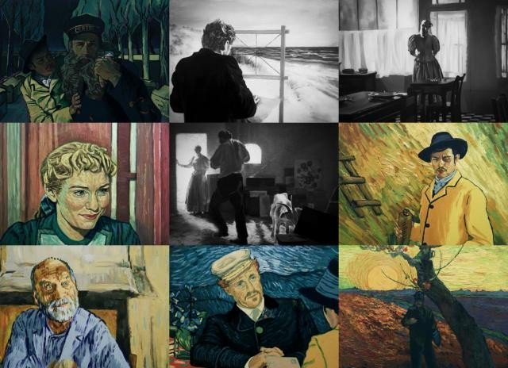

影片用一封无法投递的信件串联起梵高在去世前最后六周里与他生命中最重要的三个人物之间的秘密，带观众穿越回十九世纪末的欧洲，并陪伴梵高走完他最后的人生。影片采用梵高原画作品中的人物原型还原梵高的艺术人生，让观众在享受美得令人窒息的视觉盛宴时，抽丝剥茧地发现隐藏了一个半世纪的秘密。
影片用一封无法投递的信件串联起梵高在去世前最后六周里与他生命中最重要的三个人物之间的秘密，带观众穿越回十九世纪末的欧洲，并陪伴梵高走完他最后的人生。影片采用梵高原画作品中的人物原型还原梵高的艺术人生，让观众在享受美得令人窒息的视觉盛宴时，抽丝剥茧地发现隐藏了一个半世纪的秘密。
◎译 名 至爱梵高·星空之谜/至爱梵高/致梵高的爱/情迷梵高(港)/梵谷：星夜之谜(台)/探索梵高的生与死/挚爱梵高
◎片 名 Loving Vincent
◎年 代 2017
◎产 地 英国/波兰
◎类 别 剧情/传记/动画
◎语 言 英语
◎上映日期 2017-06-12(安锡动画电影节)/2017-10-13(英国)/2017-12-08(中国大陆)
◎片 长 95分钟
◎导 演 多洛塔·科别拉 Dorota Kobiela / 休·韦尔什曼 Hugh Welchman
◎主 演 道格拉斯·布斯 Douglas Booth
罗伯特·古拉奇克 Robert Gulaczyk
埃莉诺·汤姆林森 Eleanor Tomlinson
杰罗姆·弗林 Jerome Flynn
西尔莎·罗南 Saoirse Ronan
海伦·麦克洛瑞 Helen McCrory
克里斯·奥多德 Chris O’Dowd
约翰·塞森斯 John Sessions
艾丹·特纳 Aidan Turner
詹姆斯·格林尼 James Greene
比尔·托马斯 Bill Thomas
马丁·赫德曼 Martin Herdman
理查德·班克斯 Richard Banks
霍莉·厄尔 Holly Earl
◎获奖情况
第75届金球奖 (2018)
电影类 最佳动画长片(提名)
第30届欧洲电影奖 (2017)
最佳动画片
第45届动画安妮奖 (2018)
最佳独立动画长片(提名)
最佳编剧(提名) 贾科·丹纳尔 / 多洛塔·科别拉 / 休·韦尔什曼
最佳配乐(提名) 克林特·曼塞尔
第20届上海国际电影节 (2017)
金爵奖 最佳动画片 多洛塔·科别拉 / 休·韦尔什曼
第22届美国艺术指导工会奖 (2018)
电影奖 最佳动画电影艺术指导(提名)
第89届美国国家评论协会奖 (2017)
十佳独立电影
第23届美国评论家选择电影奖 (2018)
最佳动画片(提名)
第22届金卫星奖 (2018)
电影部门 最佳动画片(提名)
第4届豆瓣电影年度榜单 (2017)
评分最高的动画片(提名)
年度电影原声(提名)
12月最受关注电影(提名)
